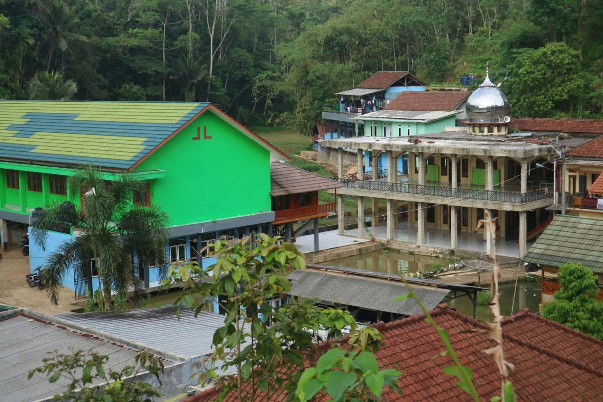

Pendalaman Ilmu
Ruang belajar untuk memperluas pemahaman, membangun kebiasaan membaca, dan menguatkan tradisi keilmuan.
Pondok Pesantren Sabilunnajat menjadi ruang untuk bertumbuh dalam ilmu, memperkuat akhlak, dan menyiapkan diri untuk memberi manfaat bagi umat.

Tempat bertumbuh dalam ilmu, adab, dan pengabdian.
Pondok Pesantren Sabilunnajat adalah lingkungan pendidikan dan pembinaan santri. Melalui proses belajar, pembiasaan ibadah, kehidupan bersama, dan bimbingan para pendidik, santri diarahkan untuk terus memperbaiki diri.
Bagian ini dapat dilengkapi dengan sejarah resmi pesantren, nama pendiri, tahun berdiri, serta perjalanan pesantren dari masa ke masa.
Sesuaikan bagian ini dengan program pendidikan yang benar-benar berjalan di pesantren.
Ruang belajar untuk memperluas pemahaman, membangun kebiasaan membaca, dan menguatkan tradisi keilmuan.
Kegiatan pembelajaran dan pembiasaan keagamaan yang membimbing santri dalam kehidupan sehari-hari.
Belajar bertanggung jawab, hidup bersama, bekerja sama, serta memberi manfaat bagi lingkungan.
Pesantren bukan hanya tempat menerima pelajaran, tetapi juga ruang untuk melatih disiplin, kebersamaan, dan kepedulian.
Pesantren Sabilunnajat berada di lingkungan Cileungsir, Rancah, Ciamis, Jawa Barat. Dokumentasi kegiatan akan ditambahkan secara bertahap.
Dokumentasikan jadwal, suasana, dan kegiatan pembelajaran santri.
Angkat kegiatan bersama yang membangun tanggung jawab dan kepedulian.
Perkenalkan kegiatan organisasi, seni, olahraga, dan karya santri.
Foto lingkungan pesantren menjadi bagian dari dokumentasi visual Sabilunnajat. Galeri kegiatan santri dapat ditambahkan kemudian.
Gunakan bagian ini untuk mengabarkan agenda, prestasi, pengumuman, dan tulisan dari lingkungan pesantren.
Ganti dengan pengumuman resmi, tanggal kegiatan, dan informasi yang sudah terverifikasi.
Ceritakan kegiatan pesantren dengan foto, waktu pelaksanaan, dan keterangan singkat.
Terbitkan artikel, refleksi, atau karya santri yang bermanfaat bagi pembaca.
Untuk informasi pendidikan, kunjungan, atau keperluan resmi, silakan hubungi pengelola pesantren melalui saluran kontak yang telah diverifikasi.